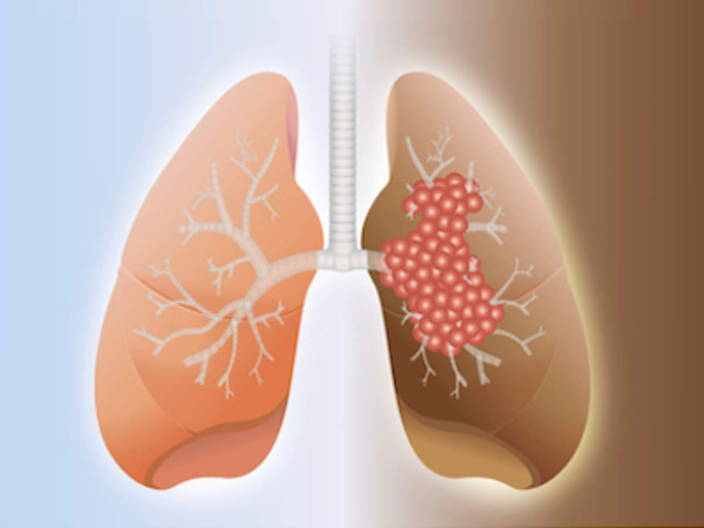

NSCLC : The Root Cause
Lung Damage: A Silent Killer
Persistent Cough & Shortness of Breath 😷
NSCLC causes long-lasting respiratory issues, making breathing difficult. 🫁
Severe Chest Pain & Fatigue 💔
Chest pain and extreme fatigue drain patients physically and emotionally. 😓

Unexplained Weight Loss ⚖️
Sudden weight loss leaves patients weak and reduces their ability to fight the disease. 💪

Metastasis: Cancer Spreads Rapidly 🔄
Spread to Brain & Bones 🧠💀
NSCLC spreads quickly to organs like the brain, liver, and bones, complicating treatment. 🚨
Advanced Stage is Harder to Treat 💔
Once metastasized, the cancer becomes more resistant to therapies, worsening prognosis. 📉
Impact on Cognitive Functions 🧠
Metastasis to the brain affects cognitive functions, including memory and coordination. 💭

NSCLC Impacts Quality of Life 🌟
Loss of Vitality & Physical Health 😔
Patients become bedridden, losing their ability to carry out everyday activities. 🛏️
Emotional & Social Isolation 😞
As physical strength declines, patients experience social and emotional isolation. 😢

Limited Access to Treatments 💊
Not everyone has access to life-saving therapies, increasing the suffering. 💔
NSCLC by the Numbers 📊
2.2 Million New Cases Per Year 🌍
Globally, over 2.2 million new cases of NSCLC are diagnosed annually. 🌐
1.8 Million Deaths Per Year 💀
NSCLC causes over 1.8 million deaths annually worldwide. ⚠️
5-Year Survival: Less than 15% ⚠️
Advanced stages have a 5-year survival rate below 15%, highlighting the urgency of early detection. ⏳
Help raise awareness and fight against NSCLC! Together, we can make a difference. 🦸♂️🦸♀️
Join the Fight Now!